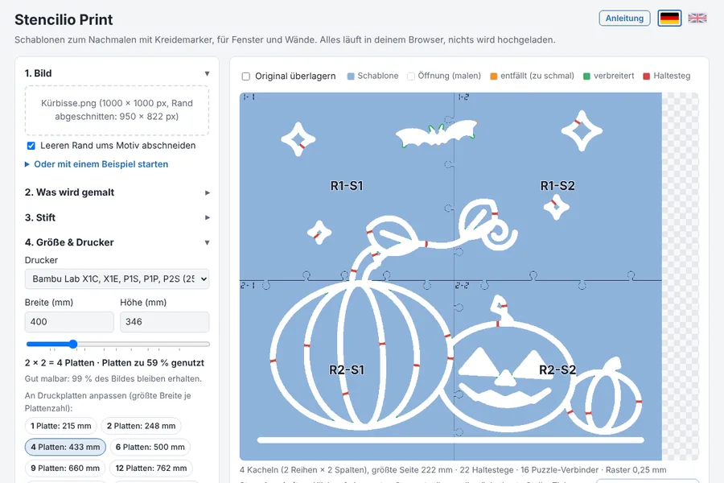
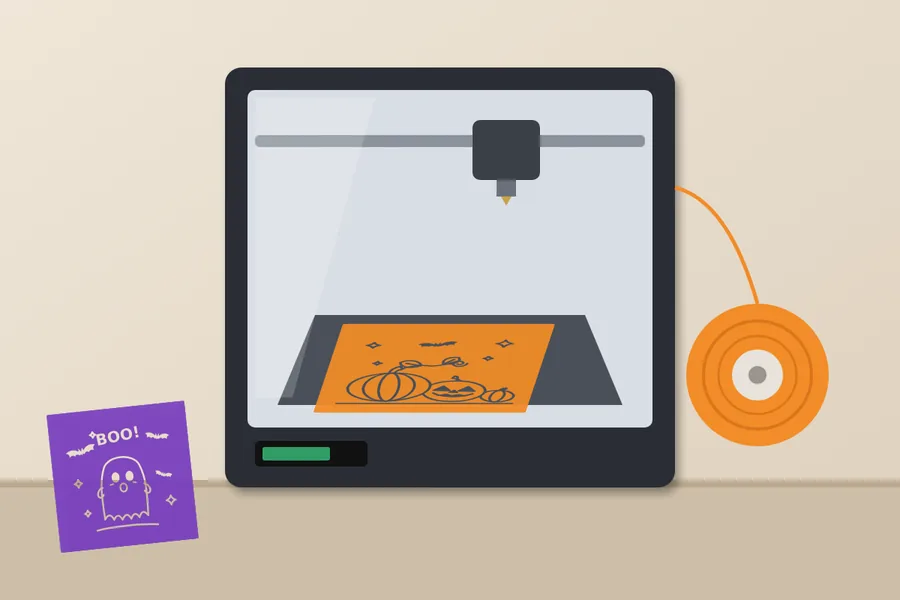
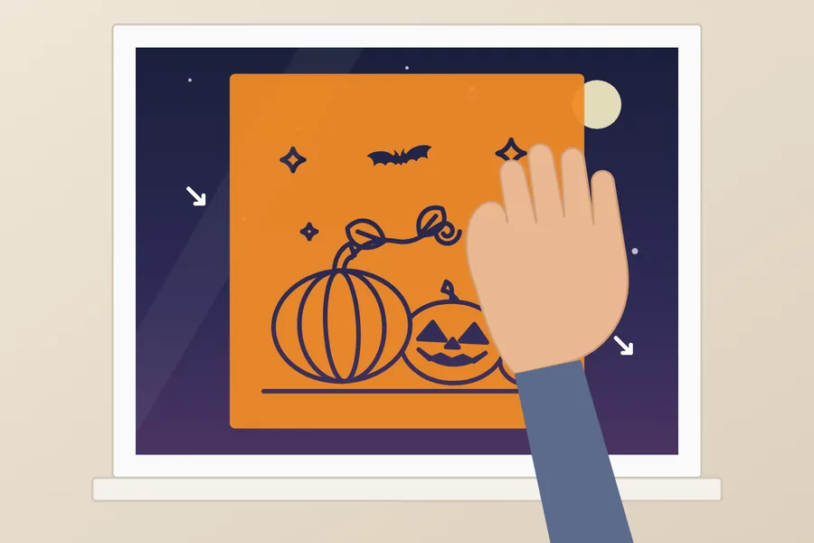
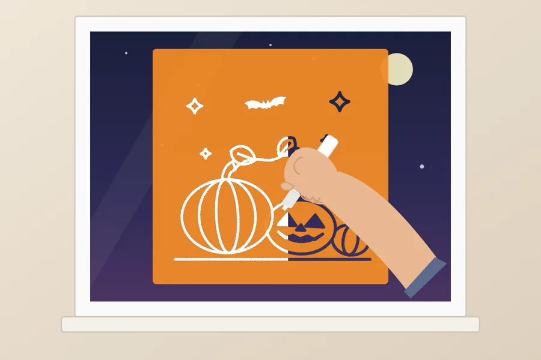
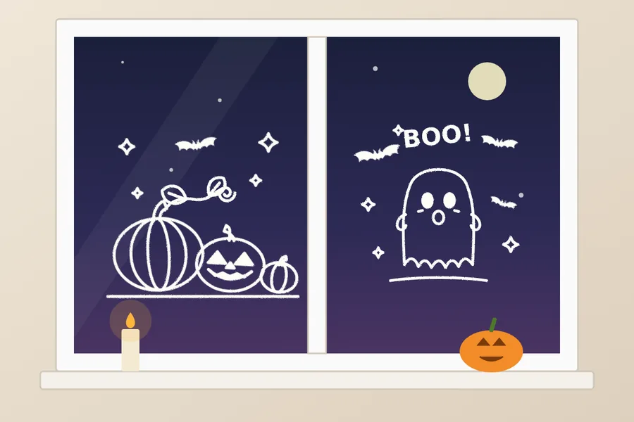

Willkommen bei Stencilio Print
Aus einem Bild wird eine flache Schablone für den 3D-Drucker. Du legst sie auf, malst durch die Öffnungen, und das Motiv ist da. Ob Kreidemarker am Fenster, Filzstift auf Papier oder Farbe an der Wand: Du kannst jede Vorlage machen, die du dir erträumst. Die Schritte unten zeigen es am Beispiel Fensterbild.
In 5 Schritten zum Fensterbild

1. Vorlage erstellen Bild wählen, Stift und Größe einstellen und die 3MF-Datei exportieren.
2. Drucken In Bambu Studio „Alle Platten slicen“ und drucken. Empfohlen sind 0,6 mm Höhe (0,4 mm geht auch). Das ist die Höhe der Schablone, jede Düse passt.
3. Ans Fenster legen Schablone auf die Scheibe legen und glatt andrücken. Tipp: Auf der glatten PEI-Platte (Smooth Plate) gedruckt, haftet die glatte Unterseite meist ganz ohne Klebeband am Glas. Sonst hilft etwas Malerkrepp.
4. Ausmalen Mit dem Kreidemarker durch die Öffnungen malen, kurz trocknen lassen und die Schablone vorsichtig abziehen.
5. Genießen Fertig ist das Fensterbild. Kreidemarker lässt sich später feucht abwischen, und die Schablone kannst du immer wieder verwenden.
‹ ›
Was du damit machen kannst
Fensterbilder für Halloween, Weihnachten, Ostern oder den Geburtstag
Malvorlagen für Kinder: mit Filzstift oder Buntstift aufs Papier übertragen und danach ausmalen
Buchstaben, Zahlen und Formen zum Nachfahren, zum Beispiel für Schulanfänger
Wandmotive und Bordüren mit Acrylfarbe, Schwamm oder Sprühdose
Stoff gestalten: T-Shirts, Taschen oder Kissen mit Textilstift oder Stoffmalfarbe
Holzschilder, Grußkarten, Geschenkpapier und Deko für Hochzeit oder Party
Straßenkreide-Bilder auf dem Gehweg und Vorlagen zum Kürbisschnitzen
Schriftzüge, Logos und Silhouetten auf Glas, Spiegeln, Tafeln oder im Schaufenster
Große Motive über mehrere Druckplatten, die wie ein Puzzle zusammengesteckt werden
So geht's
Bild hochladen. Am besten klappen klare Schwarz-Weiß-Motive wie Ausmalbilder.Was wird gemalt: Mit der Helligkeits-Schwelle legst du fest, welche Bereiche zu Öffnungen werden.Stift: Markerbreite wählen. Alle Öffnungen werden mindestens so breit, dass der Stift durchpasst.Größe & Drucker: Drucker und Breite wählen. Die Knöpfe passen das Motiv genau an eine Plattenzahl an. Zu kleine Größen sind gesperrt.Exportieren: Die 3MF in Bambu Studio öffnen, „Alle Platten slicen“, drucken.
In der Vorschau siehst du rote Haltestege . Sie halten Innenteile wie die Mitte eines „O“ fest. Ein Klick auf einen Steg verschiebt ihn, ziehen setzt einen eigenen.
Gut zu wissen
Alles läuft in deinem Browser. Deine Bilder werden nicht hochgeladen.
Verwende nur Bilder, die du nutzen darfst. Fremde Motive sind meist nur für den privaten Gebrauch erlaubt.
Teste Stift oder Farbe zuerst an einer unauffälligen Stelle. Auf porösen oder beschichteten Flächen lässt er sich oft schlecht entfernen.
Die App ist ein kostenloses Hobbyprojekt und wird ohne Gewähr bereitgestellt.
Los geht's
Welcome to Stencilio Print
Turn an image into a flat stencil for your 3D printer. Lay it down, paint through the openings, and your design appears. Chalk marker on a window, felt pen on paper or paint on a wall: you can make any template you can dream up. The steps below show a window picture as an example.
Window art in 5 steps
1. Create the template Choose an image, set marker and size, and export the 3MF file.2. Print In Bambu Studio choose “Slice all plates” and print. We recommend 0.6 mm height (0.4 mm works too). That is the height of the stencil; any nozzle works.3. Place it on the window Lay the stencil on the glass and press it flat. Tip: printed on the smooth PEI plate, the smooth underside usually clings to glass without any tape. Otherwise a little painter’s tape helps.4. Paint Trace through the openings with the chalk marker, let it dry briefly and peel the stencil off carefully.5. Enjoy Your window art is done. Chalk marker wipes off with a damp cloth later, and the stencil can be used again and again.
‹ ›
What you can make
Window art for Halloween, Christmas, Easter or birthdays
Templates for kids: trace onto paper with a felt pen or crayon, then colour in
Letters, numbers and shapes to trace, for example for school starters
Wall designs and borders with acrylic paint, a sponge or spray paint
Fabric: T-shirts, bags or cushions with fabric markers or fabric paint
Wooden signs, greeting cards, wrapping paper and decorations for weddings or parties
Sidewalk chalk pictures and pumpkin carving templates
Lettering, logos and silhouettes on glass, mirrors, chalkboards or shop windows
Large designs spread over several build plates that snap together like a puzzle
How it works
Upload an image . Clear black-and-white designs such as colouring pages work best.
What gets painted: the brightness threshold decides which areas become openings.Marker: choose the marker width. Every opening becomes at least wide enough for the marker.Size & printer: choose your printer and width. The buttons fit the design to an exact number of plates. Sizes that are too small are locked.Export: open the 3MF in Bambu Studio, choose “Slice all plates” and print.
The preview shows red holding bridges . They keep inner parts, like the middle of an “O”, in place. Click a bridge to move it, or drag to add your own.
Good to know
Everything runs in your browser. Your images are never uploaded.
Only use images you are allowed to use. Designs by others are usually for private use only.
Test your marker or paint on an inconspicuous spot first. It can be hard to remove from porous or coated surfaces.
This app is a free hobby project and is provided without any warranty.
Let's go